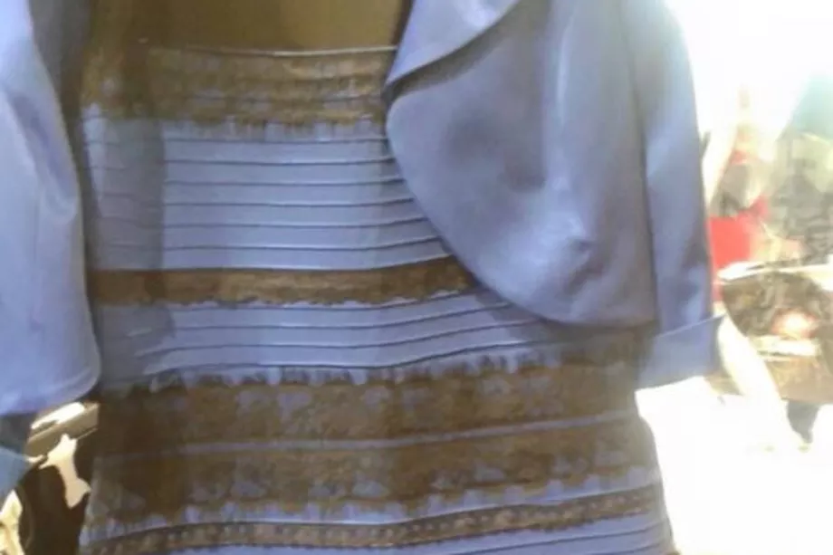
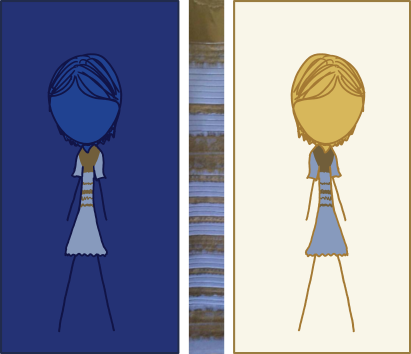

Week 2, let’s go! Deze week zijn we verder gegaan met waarnemen.
Feiten over waarnemen:
- We percieve what we expect
- Our vision is optimized to see structure
- We seek and use visual structure
- Reading is unnatural
- Our colour vision is limited
- Our peripheral vision is poor.
Met deze kennis kunnen we beter designen.
Visuele hierarchie in tekst:
- Verdeel de teskst: hoofdstukken, paragrafen, alinea’s
- Geef elk onderdeel een informatief kopje
- Breng een hierarchie aan door middel van een lay-out: font grootte, vet, cursief, witruimte, etc.
Ken je zwaktes, een CMD’er hoeft niet alles te kunnen, maar zorg dat teksten foutloos zijn. Jíj bent verantwoordlijk voor de indeling.
We nemen verschillen waar, geen absolute waarden.
We hebben moeite met het onderscheiden van:
- Vage, bleke kleuren
- Kleine kleurvakken
- Vlakken ver uiteen
Guidelines for using colour:
1. Distinguish colours by saturation and brightness as well as hue
2. Use distinctive colours
3. Avoid colour pairs that colour-blind people cannot distinguish
4. Use colour redundantly with other cues
5. Separate strong opponent colours
Kleuren hebben voor mensen betekenis, en dat kan wel eens anders zijn in andere culturen.
De kegeltjes in je ogen kunnen moe worden, als je te lang naar een kleur kijkt.
Why is peripheral vision important?
1. Guides fovea
2. Detects motion/danger
3. Lets us see better in the dark
Ik moest bij optische illusies gelijk denken aan de foto van de witte en gouden jurk, waarvan de helft van de wereld dacht dat ie blauw en zwart was. Weet je nog?

Ik heb daar een artikel van gevonden op The Verge (zie bronnen) waarin dit fenomeen wordt uitgelegd: “Science explains that our eyes have more difficulty seeing blue light than warmer colors, and that low light situations can make us see things in different shades. With the comic below illustrating how the "different" colors people are seeing could be the result of a white-balance optical illusion. Essentially, this is when our eyes are tricked by the context of what we're looking at — a similar thing is happening in the famous 'checker shadow illusion.' And if you don't believe the colors on the two dresses above are the same, try opening up the comic in an image editor of your choice and use the color picker. They. Are. Identical.”

Het blijft bijzonder hoe iedereen dingen anders zien, maar het is zeker iets om bewust van te zijn.
“Designers need to be aware that there are common processing errors and in particular to be aware of visual stress and color blindness so that they can adjust their designs to minimize the impacts of these errors.” – Interaction Design Foundation
Als wij een tekst lezen, kijken we vaak ook onbewust naar structuur. Teskt wat in stukjes wordt aangeboden is vaak makkelijker te lezen dan bijvoorbeeld een blok. We nemen ook sneller informatie op als een tekst gestructureerd is en kunnen we ons focussen op relevante informatie.
Groepsopdracht:
Met mijn werkgroepje hebben we een presentatie gehouden over UX voorbeelden in visuele perceptie en het onderwerp dat we hadden gekozen was ‘the principles of visual design’ van het Nielsen Norman Group. Die zijn als volgt:
- Scale: The principle of scale refers to using relative size to signal importance and rank in a composition.
- Visual hierarchy: refers to guiding the eye on the pae so that it attends to design elements in the order of their importance.
- Balance: occurs when thee is an equally distributed amount of visual signal on both sides of an imaginary axis.
- Contrast: refers to the juxtaposition of visually dissimilar elements in order to convey the fact that these elements are different.
- Gestalt: the Gestalt principles capture our tendency to percieve the whole as opposed to individual elements.
Voor elke principe hebben we een voorbeeld gevonden en getoond uit de UX wereld.
- Hoofdstuk 3, 4 en 5 van Designing with the Mind in Mind, Jeff Johnson
- Optische illusies op youtube
- Dit artiekel over visual perception op interaction-design.org
- Dit artikel van The Verge